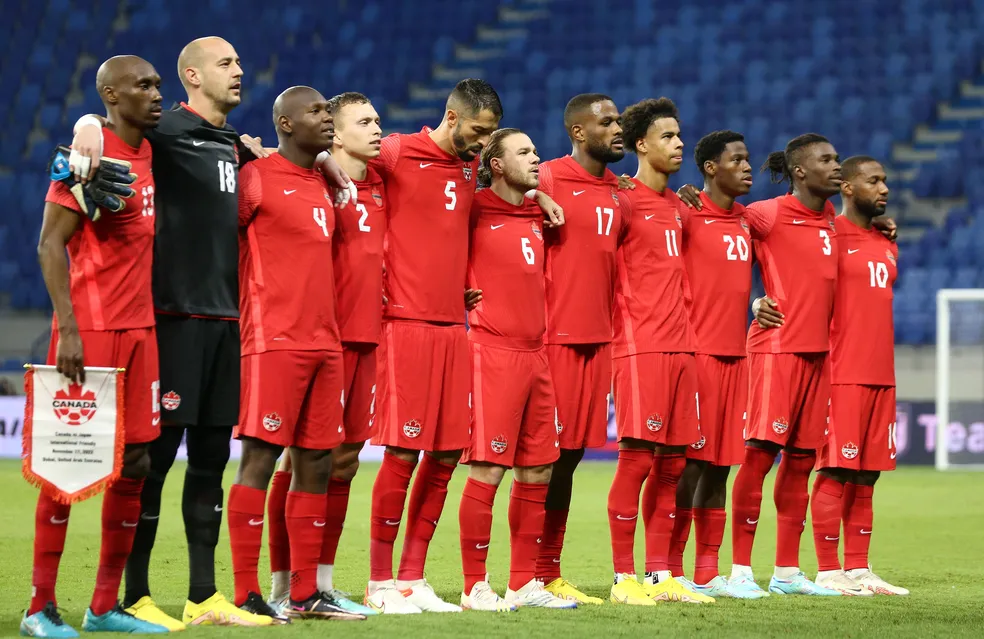

🏆 Títulos
A Seleção Canadense conquistou a Copa Ouro da CONCACAF em 1985 e 2000. Também participou de Copas do Mundo e será uma das anfitriãs da Copa do Mundo de 2026.
👕 Cores da Camisa
As cores principais da seleção são vermelho e branco, inspiradas na bandeira do Canadá. O uniforme costuma ter detalhes que representam a folha de bordo (maple leaf).
🔍 Curiosidades
- O Canadá sediará a Copa do Mundo de 2026 junto com Estados Unidos e México.
- Alphonso Davies é um dos jogadores mais famosos da seleção.
- O país voltou a disputar uma Copa do Mundo em 2022 após 36 anos.
🇨🇦 Por que eu escolhi esta seleção?
Escolhi a Seleção Canadense porque fiz intercâmbio no Canadá. Durante minha experiência no país, conheci melhor a cultura canadense e acompanhei o crescimento do futebol por lá. Por isso, tenho um carinho especial pela seleção.